AI systems
Useful intelligence, automation, and agent-led tools designed around a real decision or workflow.
- AI integration
- Automation
- Research systems
Independent studio · Johannesburg, South Africa
Synontech builds intelligent systems, practical software, and considered digital experiences for people and businesses with real work to do.

Synontech studio01 / 03What we do
We combine product thinking, engineering, and visual care to turn an idea or a stubborn problem into something people can actually use.
Useful intelligence, automation, and agent-led tools designed around a real decision or workflow.
Desktop, business, and custom applications that make a difficult job calmer, faster, or more reliable.
Thoughtfully built sites and digital platforms with a clear message, strong identity, and room to grow.
Selected work
Original products and client-facing platforms are where Synontech’s practice becomes tangible.
Application ecosystem · Manufacturing

Kerf Suite is a growing ecosystem of integrated workshop tools. Its first product, KerfCut, helps makers optimise cuts, reduce waste, and keep jobs moving.
Desktop application · Media

MKVoodoo brings downloading, conversion, smart naming, track control, and batch queues into one Windows media workbench.
Website and digital identity
BGrafX brings together brand, graphic, web, and production design. Its site is a focused home for a broad creative practice.
In development
These are early applications under active exploration. Their direction may evolve as the work learns more about the problem.
An AI digital growth adviser that turns website performance findings into clear, prioritised next steps for small businesses.
AI system · Web platformA codebase intelligence assistant for tracking project health, legacy signals, style patterns, and useful development context.
AI system · Developer toolAn AI-supported market intelligence research platform exploring signals, sentiment, and clearer market context.
AI research · Market intelligenceA safe project snapshot utility that creates portable, auditable JSON context for development review and AI-assisted work.
Developer utility · ApplicationHow we work
We stay close to the people, process, and outcome that make the work worth doing.
Good technology does not demand an instruction manual before it earns your trust.
We design foundations that can improve with new evidence instead of fighting it.
The wider network
Synontech is part of a small independent network of software, design, games, and personal creative work.
Have a problem worth solving?
Talk to Synontech about AI, an application, a website, or a product idea that needs a practical path forward.